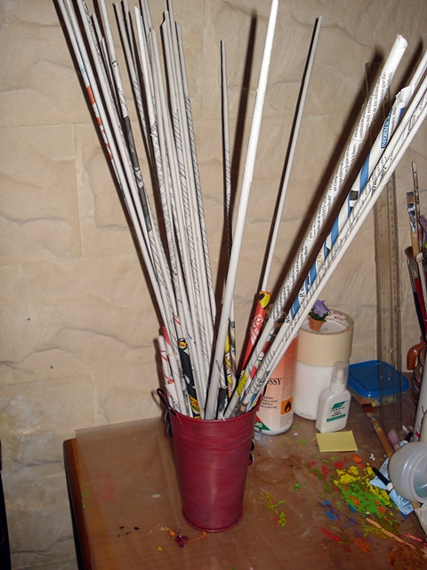
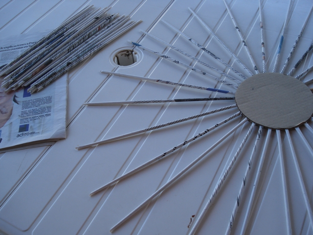
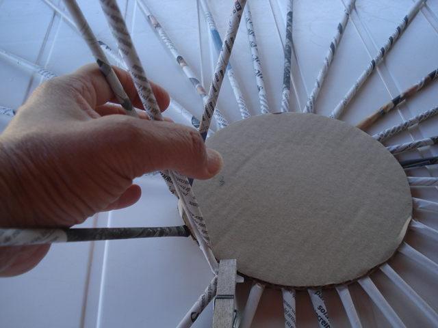
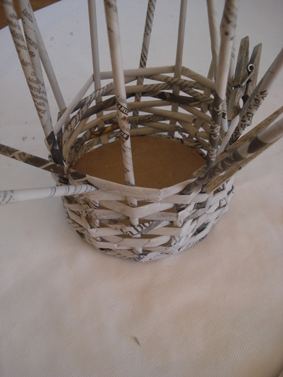
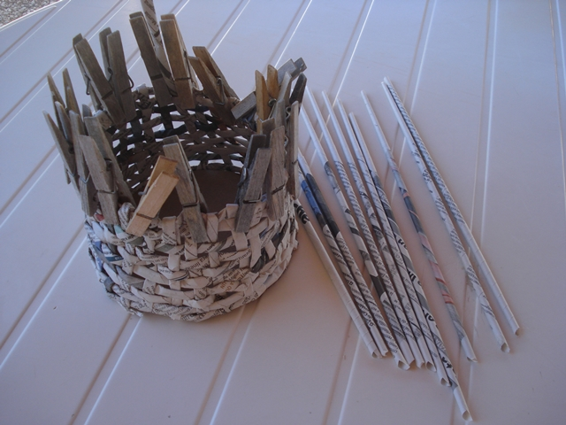
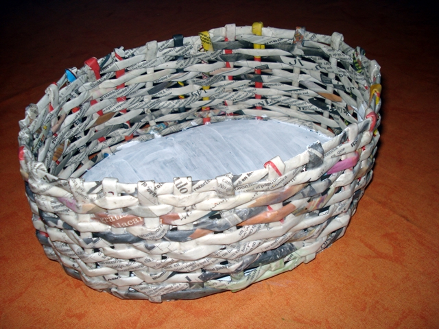

Tutoriales
Esta técnica es impactante cuando se ven los resultados, no parece papel, además las cestas quedan muy fuertes y son muy resistentes. Podemos pintarlas del color que nos guste o bien dejarlas sin pintar con el periódico visto con una capa de barniz.
Para comenzar...
Vamos con un video explicativo de como realizar las varillas
Sencillo..verdad?. Con la práctica adquieres cantidad en menos tiempo.
--------------------------------------------------------------
Sin perder más tiempo aqui tienes los tutoriales
Materiales Necesarios
- Papel de periódico
- cartón
- cola blanca
- palillo de madera
- pintura acrílica
- barniz
Manos a la obra!
- Lo primero es tener las tiras de papel, para ello cortamos el periódico abierto en tres tiras horizontales del mismo tamaño y con el palillo de los de hacer pinchos (yo utilizo una aguja de tejer) vamos enrollando el papel desde una esquina, sacamos el palillo y pegamos la punta del papel. La tira medirá unos 50 cm. Muy importante, que una de las puntas quede más ancha que la otra para poder introducirlas.
- Con el cartón cortamos dos círculos de 15 cm. yo utilicé el cartón grueso que separa las cajas de leche. Vamos pegando con cola blanca los rulitos de papel encima de uno de los círculos siempre en numero impar, para esta medida yo utilicé 17 cortados por la mitad, mas uno para empezar. Pegamos el otro circulo de cartón encima y ponemos un peso hasta que esté seco, quedará como veis en la foto.
- Cuando esté seco cogemos el rulito largo y empezamos a tejer con paciencia porque primero cuesta un poco, pero no os desaniméis.
- Vamos subiendo la cesta ayudándonos con pinzas hasta que tengamos la altura que nos guste. Para unir los rulitos solo tenemos que introducir un extremo dentro del otro con un poco de cola.
- Las puntas que quedan cuando tengamos la altura, se cortan unos dos cm. por encima y se van doblando y metiendo, pegándolas con cola y sujetándolas con pinzas hasta que esté seco.
- Como veis le podéis darle la forma que os guste, esta es de forma ovalada y está sin pintar así es como queda una vez terminada.
- Podemos darle muchas utilidades o simplemente como decoración quedarán muy bien.






Más información
Te invito a que busques en tu barrio alguna organización que se dedique al Reciclado. Todos podemos colaborar con nuestra comunidad. El cuidado de nuestro planeta es nuestra responsabilidad. No lo Olvides y Manos a la Obra!!